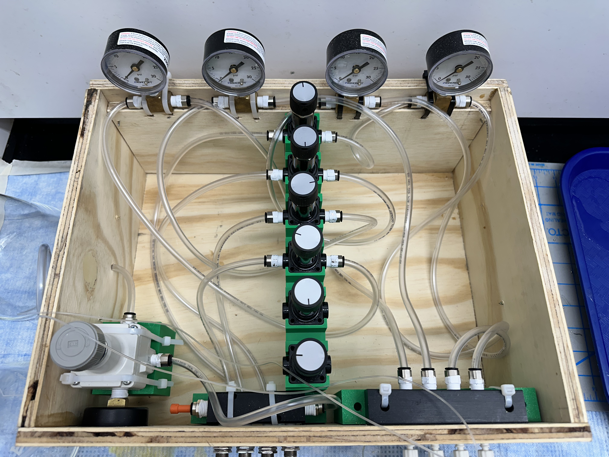

Research · Fluid Systems · CAD · Prototyping
Pneumatic Flow Control System
Designed and built a four-channel pneumatic liquid-delivery system for microfluidic research, progressing from an open proof-of-concept setup to an integrated enclosure with custom fabricated components.
View Case Study →